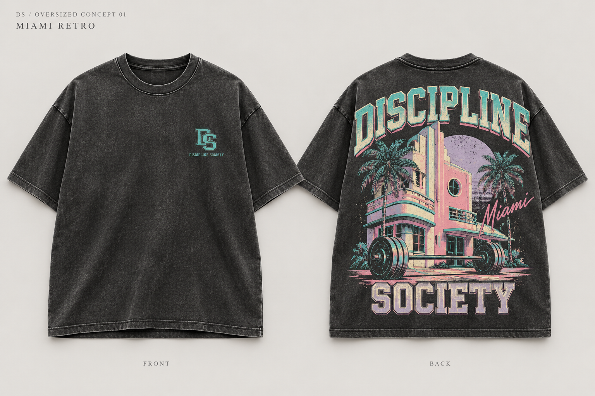
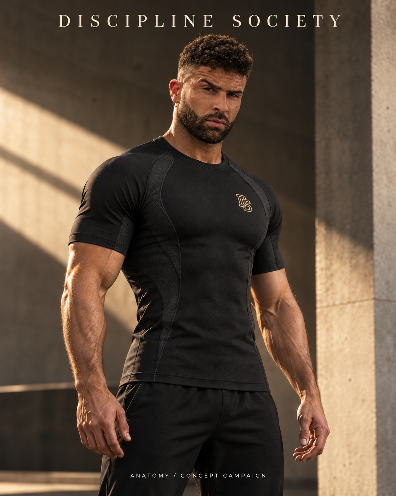
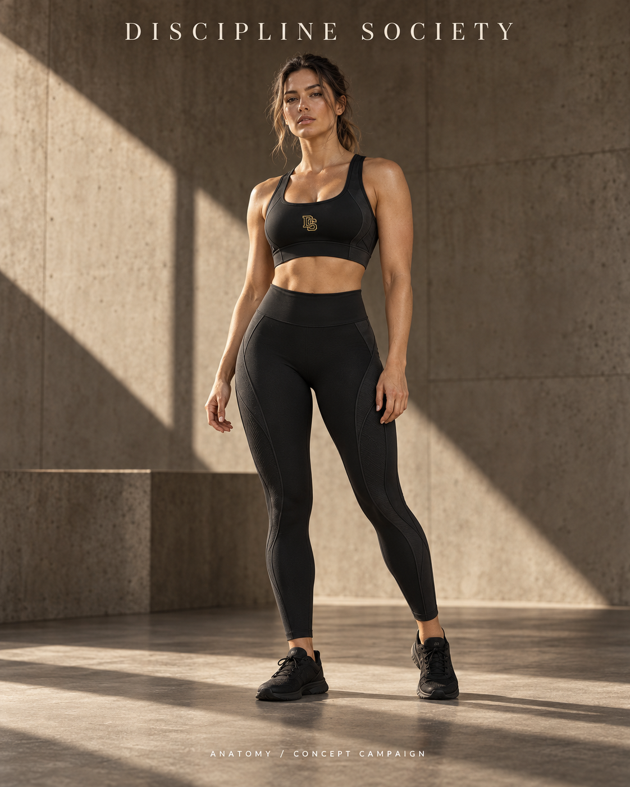
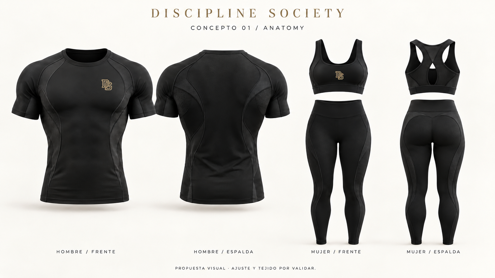
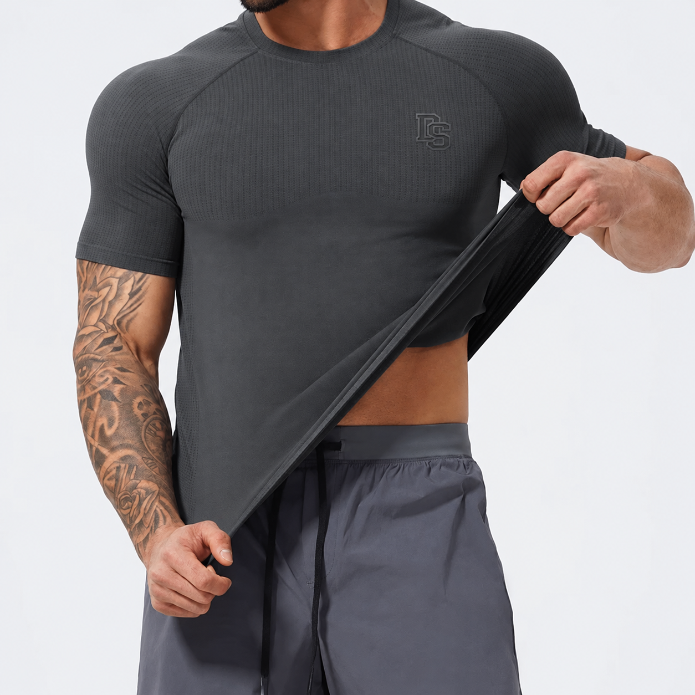
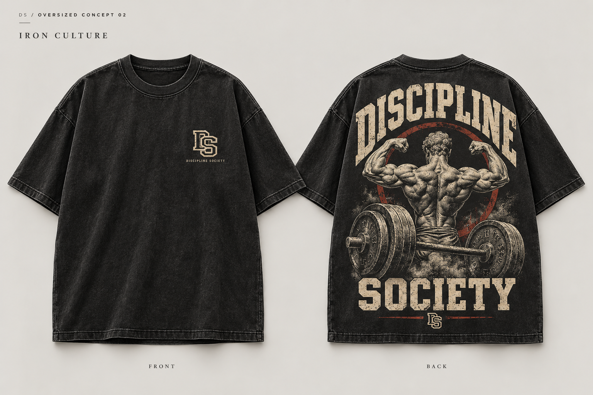

Oversized / Concepto 01
Miami Retro

Una lectura retro de Miami: tonos pastel y una gráfica que conecta la ciudad con el entrenamiento.
Concepto en desarrolloPróxima colección
Bodybuilding en cada línea.
Una nueva expresión de Discipline Society.
Una visión de lo que viene.
Diseños en desarrollo, aún no disponibles.

01 / ANATOMY
En desarrollo
Una misma identidad en dos siluetas: camiseta de compresión y conjunto femenino. Negro profundo, líneas anatómicas y el sello DS en dorado.
Conceptos pendientes de validar en muestra.
Ajuste y tejido por definir.

02 / Tonal
En desarrollo
Gris antracita. Textura visible. El monograma DS integrado en el mismo tono. La expresión más contenida de la colección.
Diseño en estudio. Tejido, ajuste y acabado pendientes de validación en muestra.
03 / Oversized
En desarrolloDos universos gráficos. Una silueta amplia.
La cultura del hierro, también fuera del gimnasio.
Oversized / Concepto 01

Una lectura retro de Miami: tonos pastel y una gráfica que conecta la ciudad con el entrenamiento.
Concepto en desarrolloOversized / Concepto 02

Un homenaje visual al bodybuilding clásico. Hierro, anatomía y una identidad que ocupa toda la espalda.
Concepto en desarrolloDiscipline Society
La disciplina se construye cada día. En el entrenamiento.
En los detalles. En la forma de estar.